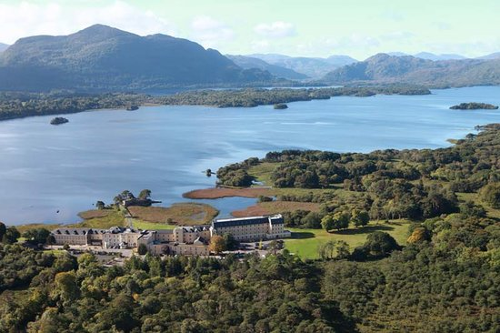
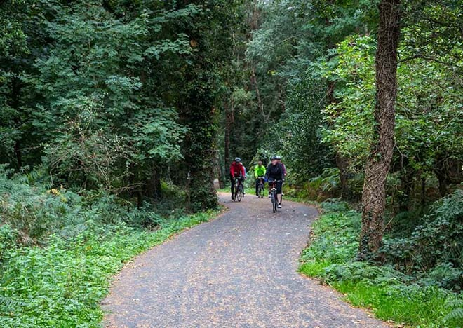
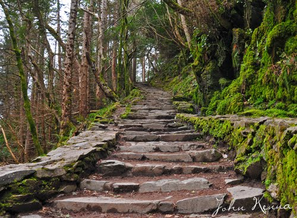
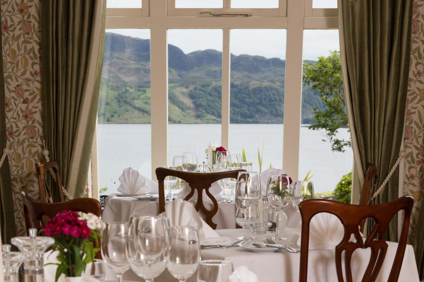

If you are visiting Killarney, Kerry or Ireland for the first time and seeking to experience a warm and authentic Irish family owned and run hotel then The Lake Hotel Killarney is the perfect hotel for your stay. The hotel offers a traditional and warm Irish welcome in a truly magnificent setting. In the 1940’s Ms Hilda Huggard became the proprietor of The Lake Hotel and passed it to her four nephews in the late 1990’s, thus ensuring that her legacy of true Irish hospitality was carried on. Book The Lake Hotel Killarney now and experience for yourself the stunning lakeside location and the friendly Irish welcome.
16 km and very scenic and mostly flat. You can walk over the Old Weir Bridge its very scenic, Arbutus the Strawberry Tree grows here in abundance, when ripe its red otherwise you will find Yellow berries. So its back on the bikes and you will arrive at the Main road with cars and buses so be careful for 500 meters before you arrive at Torc Waterfall. After 500 meters on the left is Dundag Beach a freshwater beach popular with locals in hot weather, next on the left is the Muckross Boathouse before you arrive at Muckross House & Gardens.
Muckross Abbey is close to the Lake Hotel and ideal for a walk or an early Jog, it is 2km from the Lake Hotel. The Abbey is one of the best examples of an Irish Abbey and is in remarkable condition considering the abuse it has taken from invaders in the past. The Yew Tree in the center of Muckross Abbey is said to be over 500 Years old Muckross Abbey is also ideal to visit if the weather is not great you get good shelter from the elements.
Good food and Wines are a very important part of “The Carrig Experience” and they are very proud of the achievements of our culinary team and critically acclaimed, award winning, Lakeside Restaurant, overlooking Caragh Lake. They have been consistently awarded an “AA Rosette for culinary excellence” in 2008/09/10/11/12/13/14/15/16/17 Lakeside Restaurant welcomes residents & non-residents alike Mouthwatering food, stunning views and a relaxed atmosphere.
